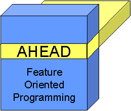

|
|
AHEAD Tool Suite |

The AHEAD Tool Suite (ATS) is a set of tools that support Feature Oriented Programming (FOP). The goal of FOP is to raise the level of specifications of systems beyond source code to that of compositional programming. Modularized units implement features that many programs within a family of programs can share. A specific member of this program family is defined by a unique composition of features. FOP methodology requires the use of extended Java languages (to express the key ideas of FOP), and ATS provides tools for:
- step-wise refinement and compositional programming
- metaprogramming
- extending programming languages (e.g., Java)
There are two papers in PDF format that you
should read before reading these documents:
|
The theory behind FOP and ATS |
|
|
Illustrative examples of FOP and ATS tools |
ATS is protected under the standard GNU Licence (here).
What's New? |
In this release, the following additional "features" have been added:
- Refactoring Java applications in previous versions of
AHEAD was difficult, because "super" had to be replaced with
corresponding "Super()" calls. No longer. "super"
can be used as in normal Java programs. "Super()" is generally
used to express refinements, although it can still be used to mean "super".
So refactoring legacy Java applications is mostly partitioning source code
into features, changing "package" declarations to "layer"
declarations, and when refinements are needed, using "Super()".
Click
here for more details.
- Hierarchical packages were not handled well in previous
versions of AHEAD, in particular, nested package names and references were not
handled properly. To reference the name of a generated package within Jak
code, you should use the identifier "$pack", which when translated to
Java, will be replaced with the name of the equation (i.e., the name of the
package) that is synthesized. Click
here for more details.
- guidsl has been improved with the addition of an
analysis that checks the consistency of the feature models.
Step-Wise Refinement and Compositional Programming |
The place to start with these documents is:
which gives a brief overview of AHEAD tools
and the extensions to Java on which AHEAD relies. The AHEAD tools that
are documented in these notes include:
|
a tool for composing features |
|
|
a tool for composing .jak files |
|
|
another tool for composing .jak files |
|
|
a tool for uncomposing .jak files |
|
|
translates .jak files to .java files |
|
|
a tool to format Java and extended Java files |
|
|
a feature model specification tool |
|
|
utility used by ModelExplorer |
|
|
a JavaDoc-like tool for .jak files |
|
|
a tool to explore feature directories and compositions |
|
|
byte code composition tools |
|
|
a tool for composing XML files |
|
|
a tool for verifying safe composition of the product-line |
|
|
a tool for verifying orthogonality of the multidimensional product-line model |
|
|
|
bytecode composition tools |
Links to legacy tools are here.
Please note: All AHEAD tools are invoked as shell scripts or bat files, such as:
> mixin <input>
where mixin is the name of an AHEAD tool. All AHEAD tools can be called as a normal Java application by invoking the Main class, provided their jar file is on the classpath:
> java mixin.Main <input>
Metaprogramming |
Metaprograms are programs that generate
other programs. Preliminary documents that describe the metaprogramming
facilities in Jak (the extended Java language in which AHEAD is written) are listed
below. These documents will eventually be replaced with a more complete
set that explains the
- Abstract Syntax Trees (ASTs) in AHEAD
- AST code constructors and escapes
- AST Cursors
- Generation Scoping
You might find it useful to read the JTS_Theory paper as background to our take on metaprogramming.
Extending Programming Languages |
Just as software applications can be
extended using step-wise refinement, so too can languages. Virtually all
AHEAD tools are written in an extended version of Java (called Jak -- short for
Given this background, you'll be ready to understand the following documents for writing and extending translators:
You will be using a set of tools in building
translators. Documents on these tools are (in the process of being
written):
|
a tool for composing grammars |
|
|
a tool for generating inheritance hierarchies from grammar files |
|
|
a tool that invokes bali2jak on an equation |
|
|
a tool for generating a javacc parser from a grammar file |
|
|
a tool for generating feature/layer templates |
Legacy Tools |
There are tools that were built for the AHEAD project that, for a variety of reasons, are either not supported or used. They are still available, and so too are their documents:
|
xml file composition tool |
|
|
design rule checker |
|
|
an origami matrix browser |
|
|
unsupported C++ tools |
Copyright © Software Systems
Generator Research Group. All rights reserved.
Revised: January 04, 2008.